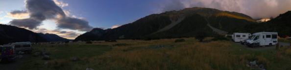

Where Does this Leave Me?

At the end of all of this, I had a fantastic two and a half months abroad. I learned a lot about my field, my interests, my career goals, New Zealand, and myself. While a pandemic may be a particularly unlikely occurrence, the rest of my life will not go as planned--that is the one thing that I can plan on with certainty. It is understandable to be upset when these things happen, but it is my response to these issues that will be important. I learned from the early conclusion of my study abroad experience just as I learned from my time abroad. I am so thankful to have lived, studied, and worked in New Zealand and will focus on the overwhelmingly positive aspects of my experience.
References
National Institute of Water and Atmospheric Research. (2015). New Zealand Glacier Monitoring: End of summer snowline survey 2015. Retrieved from https://niwa.co.nz/
Schwartz, J. (2020, May 19). Americans See Climate as a Concern, Even Amid Coronavirus Crisis. The New York Times. Retrieved from https://www.nytimes.com